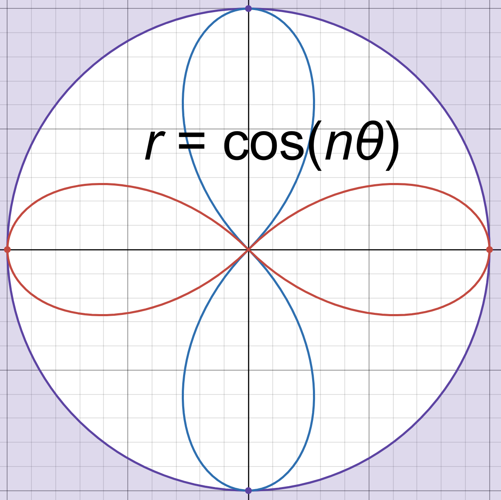
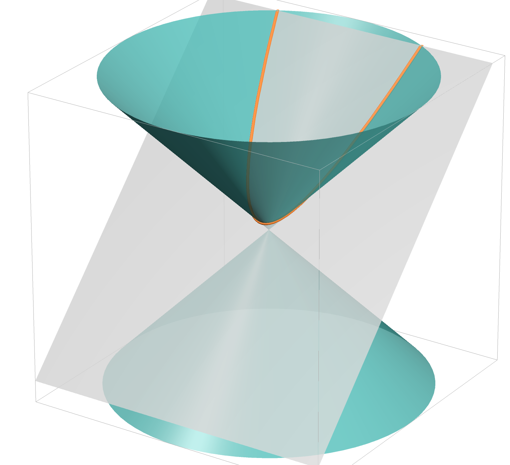
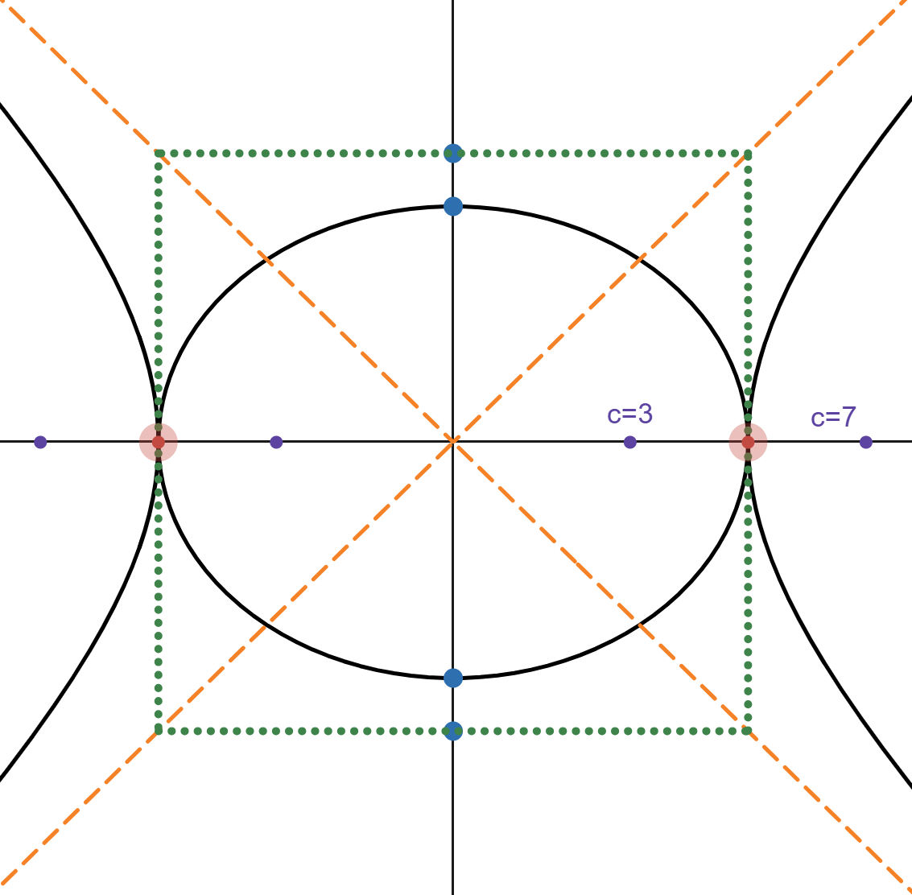
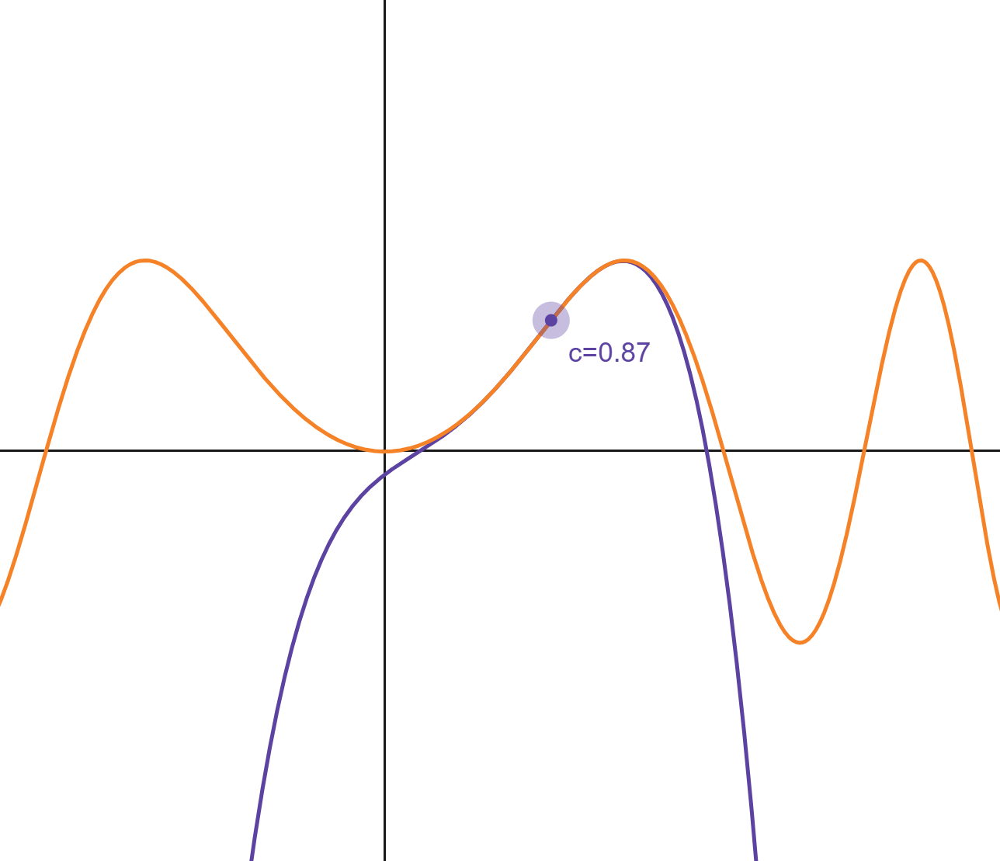
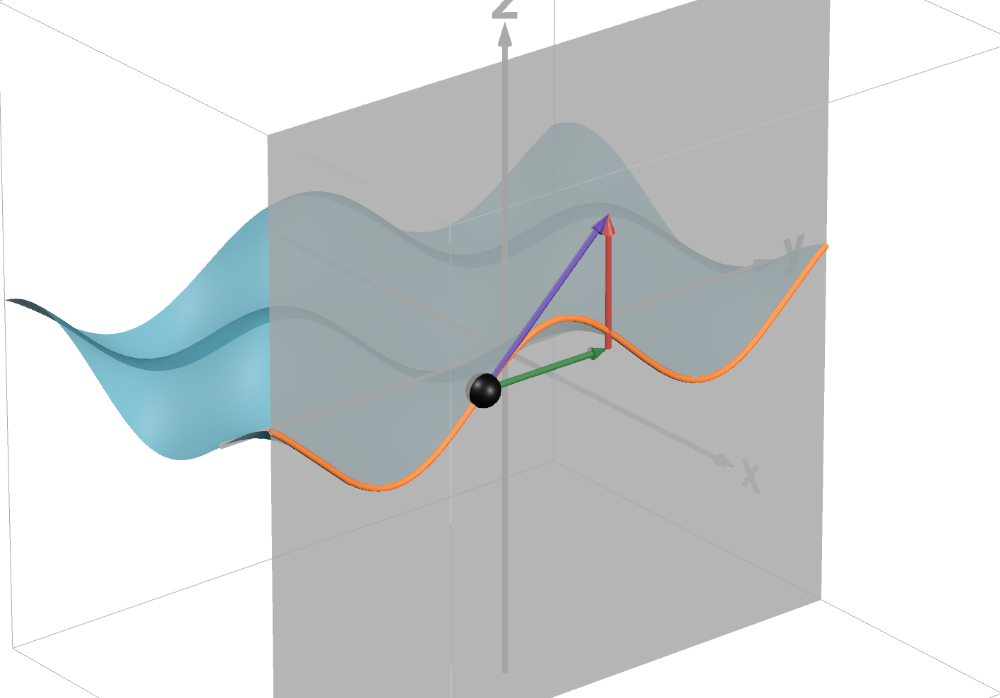

A collection of interactive Desmos visualizations for mathematics.

See how the curve r = cos(nθ) behaves differently for odd and even values of n.

See how differently-angled slices of a double cone create conic sections.

Explore how moving the foci changes eccentricity and transitions an ellipse into a hyperbola.

Compare a function with its finite Taylor polynomial approximations.

See how a partial derivative ∂f/∂y looks like for a two-variable function f(x,y).